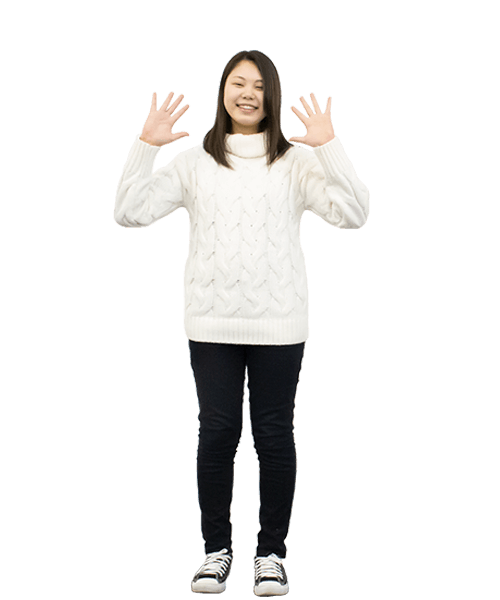

進級制作一覧
W-10飲食店のWebサイトリニューアル
Web専攻
ペタビット株式会社
課題内容
飲食店のWebサイトリニューアル。お店の認知度向上や集客のためのWebサイトのリニューアルと企画立案。
クリエイター
齊藤 のぞみ
隅谷 亮哉
枝廣 佳歩
岡村 岳
W-6ヘアカラージャムのWebサイトリニューアル
Web専攻
株式会社ベイエリア
課題内容
ヘアカラージャムのWebサイトリニューアル。女性ターゲットとした商品の販売促進のためのWebサイトのリニューアルと企画立案。
クリエイター
藤井 梓
小笠原 忍
上月 綾
W-8神戸北野の活性化企画とWebサイト制作
Web専攻
株式会社ジャム・デザイン
課題内容
神戸北野の活性化企画とWebサイト制作。神戸北野の新たな魅力を発見し、それを様々な人に伝えるための企画とWebサイトの制作。
クリエイター

森 将貴
瀧口 晴太郎
- 
藤田 真緒
與那嶺 愛梨
山本 奈穂
W-7レンタサイクルサービスのWebサイト制作
Web専攻
株式会社ディーシーアドミンズ
課題内容
レンタサイクルサービスのWebサイト制作。神戸北部周辺のレジャー施設の活性化のためのレンタサイクルサービスのWebサイトの制作と企画立案。
クリエイター
髙橋 蓮
坂野 壮志
笹山 雅哉
森本 心
W-9文化活動を支援するNPO法人C.A.P.の公式Webサイトリニューアル
Web専攻
NPO法人 芸術と計画会議 C.A.P
課題内容
文化活動を支援するNPO法人C.A.P.の公式Webサイトリニューアル。団体の成り立ちや活動を分かりやすく伝えるためのWebサイトの制作と企画立案。
クリエイター
ディエゲズ
アンドレス森本 州
大西 貫太
大上 南洋
G-2神戸の制作会社（株）トライスのリクルートツール制作
グラフィック専攻
株式会社トライス
課題内容
神戸の制作会社（株）トライスのリクルートツール制作。デザイナーを目指す就活生に会社の魅力が伝わり、入社したくなるようなツールの制作。
クリエイター
橋本 紗矢香
涌水 理恵
武内 美月
和田 亜紗実
伊藤 杏
G-3ベビーカステラ、エッグワッフルの店舗企画
グラフィック専攻
株式会社シナジーカフェ
課題内容
ベビーカステラ、エッグワッフルの店舗企画。実際に出店する可能性を踏まえた、店舗の企画とそれに伴うツールの制作。
クリエイター
清水 七海
髙田 歩実
清水 奈穂
平井 香帆
福田 睦
G-5学校の身近な問題を解決するためのデザイン
グラフィック専攻
株式会社デザインヒーロー
課題内容
学校の身近な問題を解決するためのデザイン。学校生活での困ったことや問題点の解決のきっかけとなる企画とそれに伴うツールの制作。
クリエイター
赤堀 蒼
泉 明里
菊地 夏実
大西 香凜
桂 優羽
G-1新しい文具ブランドのロゴと製品のデザイン
グラフィック専攻
株式会社Oru
課題内容
新しい文具ブランドのロゴと製品のデザイン。障がい者の描いた絵を生かした文具のデザインと告知ツールの制作。
クリエイター
孫 哲
金丸 眞子
福永 萌恵
平木 杏奈
G-4ランプシェードのパッケージデザインと販売促進企画
グラフィック専攻
インダストリアルデザイン学科
課題内容
四万十町の間伐材を生かしたランプシェードのパッケージデザインと販売促進企画とそれに伴うツールの制作。
クリエイター
張 建鋐
森 功至
宮城 翼
山本 航暉